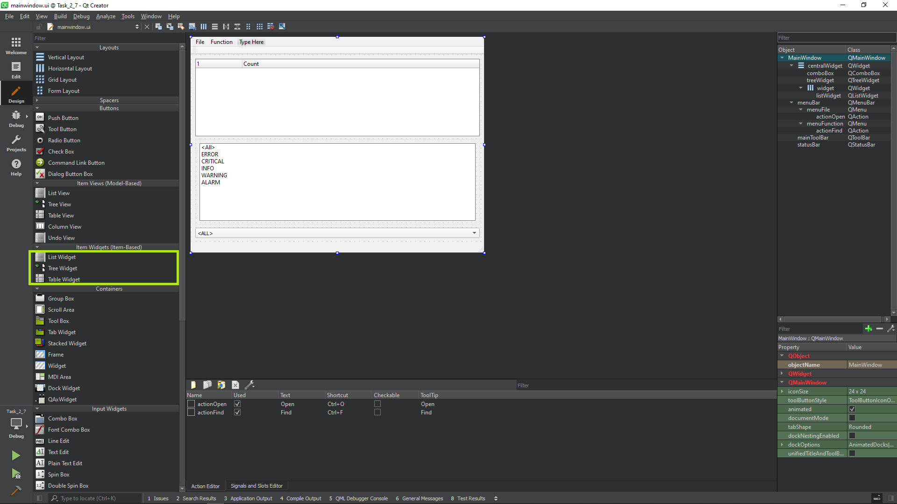
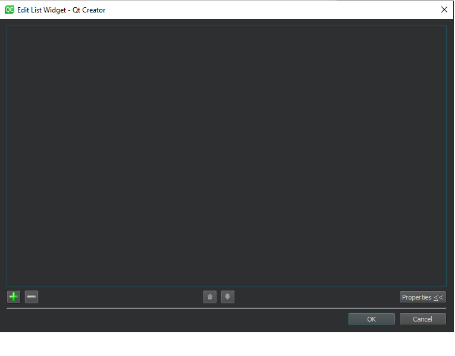
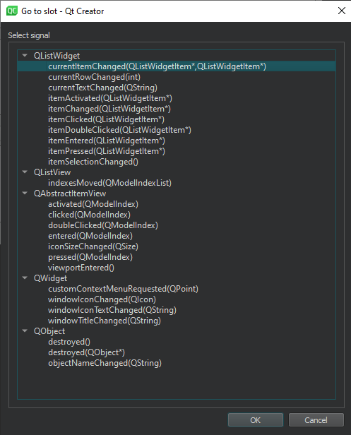

![]()
Thường thì lập trình viên cần hiển thị cho người dùng một danh sách các chuỗi. Trong thư viện QT, các widget của các lớp QListWidget và QListView phục vụ cho mục đích này
Lớp QListWidget hiển thị danh sách các chuỗi và cho phép bạn chọn các chuỗi bắt buộc từ nó. Thanh cuộn sẽ tự động được thêm vào danh sách nếu các dòng văn bản không vừa trong cửa sổ của thành phần.
Sự khác biệt bên ngoài đặc trưng của QListWidget so với các danh sách lựa chọn khác là danh sách này luôn được mở rộng, không thể chỉnh sửa, cho phép lựa chọn nhiều phần tử.Bạn có thể tìm thành phần này ở phần đóng khung bên dưới
1.1 Trong chế độ thiết kế. Chỉ cần nhấp đúp vào thành phần và nhập trình chỉnh sửa mục.
Trong trình chỉnh sửa này, bạn có thể tạo, chỉnh sửa, di chuyển và xóa các mục. Bạn có thể thay đổi diện mạo của chúng (màu sắc, kích thước, kiểu phông chữ) và thêm biểu tượng cho từng mục riêng lẻ.
1.2 Trong quá trình thực thi ứng dụng.
1.2.1 Tạo một Mục và chỉ định ListWidget mong muốn làm cha mẹ của nó
// 1. Tạo mục
auto item = new QListWidgetItem ;
// 2. Đặt thuộc tính bắt buộc
item -> setText ( "dog" );
item -> setTextColor ( QColor ( "# FFA0A0" ));
// 3. Chèn nó vào ListWidget
ui -> listWidget -> insertItem ( 3 , item );
// hoặc thêm
ui -> listWidget -> addItem(item);
1.2.3 Trong trường hợp đơn giản nhất, bạn có thể chỉ cần thêm các đoạn văn bản.
for ( auto i : { "cat" , "dog" , "cow" , "golgfish" }) {
ui->listWidget->addItem(i);
}
Người lập trình có thể lấy số hoặc văn bản của mục mà người dùng đã chọn bằng cách sử dụng các phương thức currentRow () và currentItem-> Text () .
int r = ui -> listWidget -> currentRow (); if(ui->listWidget->currentItem()){
QString t = ui -> listWidget -> currentItem () -> text ();
// làm gì đó với t
}
Lập trình viên có thể kiểm soát cách các mục trong ListWidget được chọn bằng cách đặt thuộc tính selectMode:
Lập trình viên có thể mô tả cách phản hồi các sự kiện xảy ra trong QListWidget bằng cách tạo các trình xử lý thích hợp. Để thực hiện việc này, trong chế độ thiết kế, bạn cần gọi menu ngữ cảnh của thành phần listWidget nằm trên biểu mẫu và chọn mục "go to slot..." trong đó.
Sau đó, trong hộp thoại xuất hiện để chuyển đến vị trí, hãy chọn tín hiệu mà bạn quan tâm:
và nhấn nút OK trong chế độ Trình chỉnh sửa ghi một trình xử lý sự kiện (slot).
Người lập trình có thể thay đổi giá trị của mục.
Bạn có thể thay đổi văn bản của một mục bằng cách gọi phương thức setText:
ui -> listWidget -> item ( 0 ) -> setText ( " Văn bản này đã được người lập trình sửa đổi " );
Lập trình viên có thể sắp xếp danh sách Mục tiêu theo thứ tự bảng chữ cái:
ui -> listWidget -> sortItems ();
Có thể kiểm tra tất cả các mục trong một vòng lặp để tìm sự hiện diện và / hoặc tương ứng với một cái gì đó.Ví dụ:
for ( int i = 0 ; i < ui -> listWidget -> count (); ++ i ) {
QString s = ui -> listWidget -> item ( i ) -> text ();
if ( s . contains ( "dog" ))) {
ui -> listWidget -> item ( i ) -> setSelected ( true );
}
}
Bạn có thể xóa các mục có chỉ mục nhất định:
deleteui -> listWidget -> item(0);